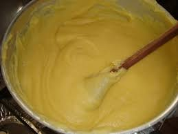

Corte o lombo de porco em pedaços e tempere com alho e sal
Frite a cebola picada na gordura do toucinho, até dourar
Coloque um pouco de açúcar e deixe corar
Adicione o lombo e frite bem
Depois de frita, junte o feijão cozido, o torresmo, o cheiro-verde picado e adicione a farinha de mandioca, mexendo sempre com uma colher de pau, até ficar bem homogênea
Pique os ovos cozidos e junte ao feijão.
Deixe no fogo por mais alguns minutos
Sirva com arroz branco.
frango com quiabo
ingredientes
10 sobrecoxas de frango
200 ml de óleo
01 folha de louro
02 cebolas picadas e fritas
03 tomates sem peles e sementes
500 ml de caldo de galinha
cheiro-verde picadinho
01 kg de quiabos
03 dentes de alho amassados
01 colher (sopa) de vinagre
água e suco de limão
sal e pimenta a gosto
03 dentes de alho amassados
porções
serve 10 pessoas
tempo de preparo
minutos
passo a passo
Limpe e lave as sobrecoxas de frando com água e limão.
Perfure com um garfo, em ambos os lados e tempere com sal, pimenta e alho amassado.
Coloque óleo em uma panela grande, deixe aquecer e frite os pedaços de frango, virando de vez em quando para dourar.
Cozinhe os tomates com o caldo de galinha e reserve.
Em outra panela, coloque óleo, aqueça e refogue o alho.
Junte os quiabos, bem limpos, com as pontas cortadas e frite mais um pouco.
Adicione o vinagre e mexa de vez em quando.
Adicione no frango a folha de louro, e deixe fritar mais um pouco.
Frite as cebolas e adicione ao frango.
Depois de bem fritos, junte o caldo de galinha com os tomates e o cheiro verde picado.
Os quiabos depois de fritos, devem ser escorridos e colocados em uma travessa.
vaca atolada
ingredientes
2 cebolas picadas
5 tomates descascados, picados sem sementes
4 dentes de alho amassados
1 colher (chá) de salsinha picada
1 colher (sopa) de vinagre
3 cebolinhas verdes picadas
1 cubinho de caldo de carne
1 kg de costela de vaca
1 kg de mandioca descascada e cortada em pedaços
2 colheres (sopa) de óleo
porções
serve 8 pessoas
tempo de preparo
60 minutos
passo a passo
Em uma panela, coloque as costelas, a cebola, o alho e o oléo.
Leve ao fogo e refogue até que dourem.
Acrescente os tomates, o vinagre, a salsinha, a cebolinha, o cubinho de caldo de carne e água suficiente para cobrir o conteúdo da panela.
Deixe cozinhar, até que a carne fique macia.
Então, junte a mandioca e água suficiente para cozinhá-la.
Servir quente.
tatu a mineira
ingredientes
500g de feijão preto
500g de linguiça de porco
03 dentes de alho amassados
03 cebolas picadinhas
03 cebolas em rodelas
03 tomates sem peles e sementes picados
02 colheres (sopa) de molho de tomate
5 colheres (sopa) de farinha de mandioca
05 ovos cozidos
Sal a gosto
Cheiro verde picado à gosto
porções
serve 6 pessoas
tempo de preparo
60 minutos
passo a passo
Em uma panela, coloque o feijão para cozinhar.
Enquanto o feijão cozinha, em outra panela, frite a linguiça.
Assim que estiver frita, adicione a cebola picada, o alho, o tamate picado, o molho de tomate e misture bem.
Adicione o refogado da panela ao feijão e bata no liquidificador.
Retorne a mistura para a panela, adicione a farinha de mandioca, mexendo sempre, para não empelotar.
Passe para uma travessa e coloque os ovos cozidos picados e o cheiro-verde por cima.
Sirva quente.
pão de queijo
ingredientes
1 ovo inteiro
1 colher (café) de sal
1 xícara (chá) de leite
1 xícara (chá) de queijo minas meia cura ralado
1 xícara (chá) de polvilho azedo
porções
serve 15 pessoas
tempo de preparo
50 minutos
passo a passo
Em uma vasilha, misture todos os ingredientes, menos o leite.
Em seguida, vá adicionando o leite aos poucos, até que a massa fique homogênea.
Modele os pães e coloque-os em forma untada com óleo.
Levar ao forno pré aquecido por 40 minutos ou até dourar.
torresmo
ingredientes
2 kg de toucinho
2 colheres (sopa) de banha
Sal a gosto
porções
serve 7 pessoas
tempoo de preparo
30 minutos
passo a passo
primeiro, retire toda a pele do toucinho.
Em seguida, corte em pequenos cubos e polvilhe com um pouco de sal refinado. Reserve.
Coloque, em uma panela, a banha e leve ao fogo brando. Cuide para que não fique muito quente.
Acrescente o toucinho cortado e frite lentamente.
Quando corar, tire com a escumadeira e deixe escorrer em papel absorvente.
Servir ainda quente.
Angu

ingredientes
2 litros de água fervendo
500g de fubá
porções
serve 15 pessoas
tempo de preparo
40 minutos
passo a passo
Dissolva o fubá num pouco de água fria, mexendo com colher de pau.
Junte a água fervendo e, mexendo sem parar, em fogo alto.
Quando a massa começar a grudar no fundo da panela, reduzir a chama e continuar a mexer até soltar do fundo da panela.
Molhe uma forma e coloque o angu.
Deixar esfriar um pouco e virá-lo numa travessa.
mingau de milho verde
ingredientes
200ml de leite
açúcar à gosto
02 colheres (sopa) de fubá de milho
sal à gosto
canela em pó à gosto
porções
serve 1 pessoa
tempo de preparo
20 minutos
passo a passo
Em uma panela, coloque todos os ingredientes, misture e leve ao fogo.
Deixe cozinhar por 15 minutos, mexendo sempre.
Retire do fogo.
Povilhe canela em pó e sirva.
bolo cremoso de fubá
ingredientes
02 colheres (sopa) de farinha de trigo
01 colher (chá) de fermento em pó
02 colheres (sopa) de manteiga ou margarina
1/2 lata de leite condensado.
03 ovos
03 xícaras (chá) de açúcar
05 xícaras (chá) de leite
01 pires de queijo ralado ou coco
1/2 xícara (chá) de fubá de milho
porções
serve 15 pessoas
tempo de preparo
40 minutos
passo a passo
Coloque todos os ingredientes no liquidificador e bata por 5 minutos.
Em uma forma untada, coloque a mistura e leve ao forno, pré aquecido até ficar bem assado.